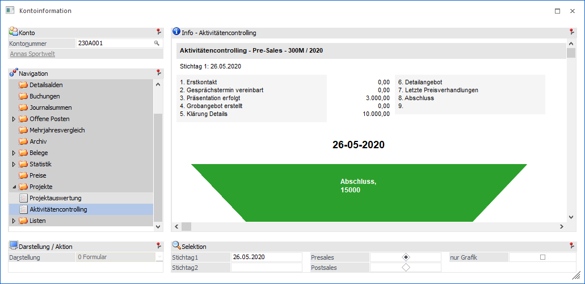
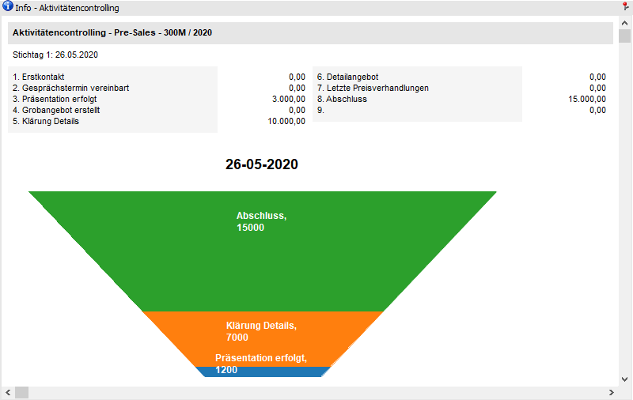
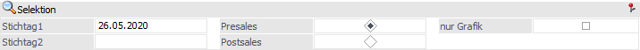

In der Ansicht "Aktivitätencontrolling" können die Pre- bzw. Postsales Stati ausgewertet werden. Dieses findet in Form einer Textanzeige und / oder einer Grafik statt.

Die Ansicht "Aktivitätencontrolling" besteht aus den folgenden Info-Elementen:
ü Info - Aktivitätencontrolling
ü Selektion
Info - Aktivitätencontrolling

An dieser Stelle werden die Stati, gemäß der nachfolgenden Sortierung, dargestellt.
Selektion

Für die Darstellung der Anzeige stehen folgende Punkte zur Verfügung, wobei die Einstellungen "Presales / Postsales" und "nur Grafik" benutzerspezifisch gespeichert werden:
Ø Stichtag1 /Stichtag2
An dieser Stelle wird definiert, zu welchem Datum ausgewertet werden soll. D.h. es werden alle zum Datum aktuellen Stati herangezogen und entsprechend dargestellt.
Hinweis
Das Feld "Stichtag2" muss nicht gefüllt werden. In diesem Fall gibt es keinen zweiten Textblock und keine zweite Grafik.
Ø Presales / Postsales
Über die Auswahl kann entschieden werden, ob die Presales- oder die Postsales-Stati ausgewertet werden sollen.
Ø nur Grafik
Durch Aktivierung dieser Option wird nur noch die Salesfunnel-Grafik (eine pro Stichtag) dargestellt.